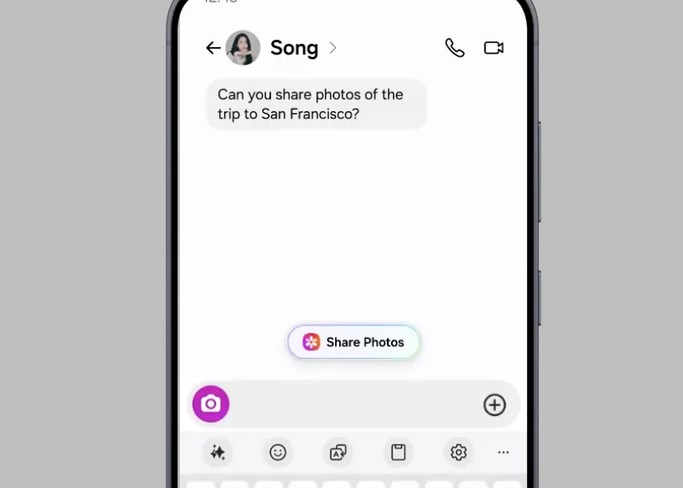
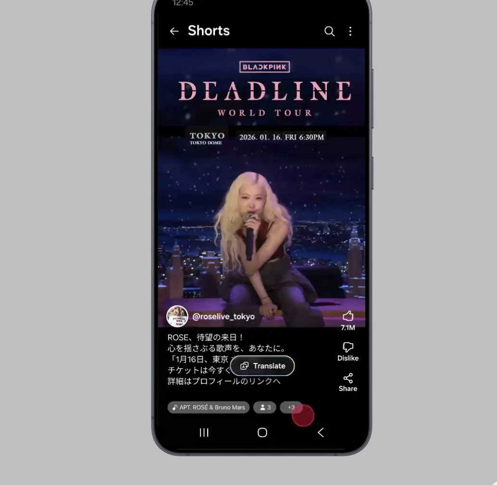
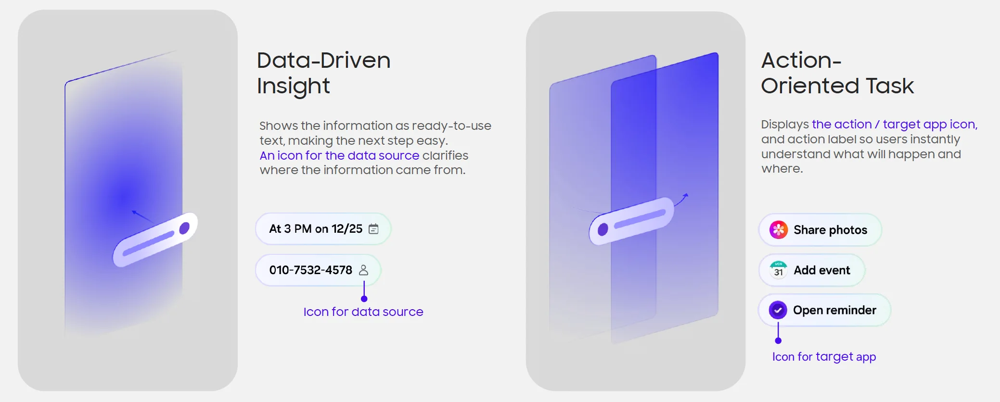
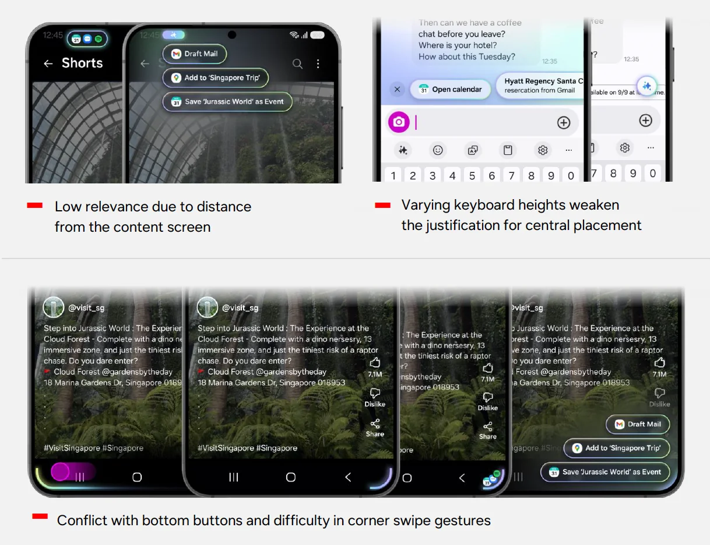

Now Nudge
Designing an OS that offers the next step before you ask

I led UX for Now Nudge, an on-device AI layer that predicts what you need next and offers it in place. Instead of copying text, switching apps, and searching, you tap one chip above the keyboard. I owned the problem framing, the interaction model, and the Nudge Handler spec that later became the shared template for proactive AI in One UI.
The user was the only orchestrator
On a phone, every cross-app task runs through the user. A friend mentions dinner on Saturday, and you copy the time, open Calendar, create an event, and come back. The intent is obvious. The execution is broken.
I led the problem framing, running contextual research across 12 real-world task flows to find where intent was clear but execution fell apart.
Two rules that shaped everything
Accuracy over coverage
Trigger only when intent is clear. A wrong nudge costs more trust than a missing one.
Glanceability over depth
Surface one action, never a menu. If it needs reading, it's not a nudge.
Critical user journeys
Smart action bridging
A message mentions weekend plans. Now Nudge reads the date, checks the calendar, and offers to add the event inline. No context switch.
Intelligent content retrieval
A friend asks for trip photos. Now Nudge recognizes the place and offers the right album. The first spec only linked to the gallery. I pushed for album-level suggestions and drove the cross-team alignment that made it possible.
Adaptive interface
You land on a page in another language and a Translate chip appears over it. I found this journey in diary study data: language switches had the highest copy-paste frequency of any moment we observed.


The Nudge Handler
I owned the full spec for the Nudge Handler, covering entry motion, label structure, and dismissal, and set it up as one shared component across every trigger type.
- Quiet entrance. It slides in without blocking the task you're doing.
- Two-to-three-word labels. "Add to Calendar," not a sentence.
- Two modes. An action nudge runs a task. A recall nudge types the answer for you.

Where should a guess live?
I tested the nudge in the top bar, as a floating chip, and in the bottom corners. The keyboard won. It's always in reach, never covers content, and asks for no new behavior.
In concept testing, keyboard-anchored placement had the highest task completion and the fewest accidental dismissals of every position we tried.

Designing for the wrong guess
A proactive system will be wrong some of the time, so I treated a miss as a design problem rather than an edge case.
- Silence by default. When the model wasn't confident, nothing appeared. We tuned for precision and accepted lower coverage.
- Cheap to ignore. A nudge never steals focus or blocks typing. Ignoring it costs nothing.
- Dismissal teaches. Dismissing a type of nudge repeatedly makes it appear less often.
- On-device by design. Screen content is read and processed on the device, which let us offer help without asking people to trade away privacy.
Result
Now Nudge shipped to 65 million devices, became the most-engaged agentic feature in One UI, and set the interaction template for the proactive AI features that followed at Samsung.
Lesson learned
Intelligence should be invisible. The best AI features don't feel like features. They feel like the device understood you.